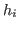
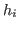

Next: Preliminaries Up: Event-Driven Collusion Previous: Event-Driven Collusion
The second section will outline the model in terms of an SFT-Net. It
omits the fully rigorous specification of the network in favor of an
intuitive explanation with the requisite notation. Note that this
section also omits the ``one step deviation principal'' for
event-driven games as well as the notion of subgame perfect/sequential
equilibrium. Basically, all of this involves a ``translation'' of the
idea of subgame perfect/sequential equilibrium in repeated games to an
event-driven framework. It is a ton of tedious mathematical
boilerplate but conceptually very simple. (On another note, it might
make sense to describe something like an ``event-driven equilibrium''
that is similar to subgame perfect. For example, we can say something
like ``If all players' internal state includes a component that
represents the entire history of past observations, then if for
all players  and histories ,
and histories ,  cannot improve his expected
utility by deviating, the strategy profile is an event-driven
equilibrium. I'm sure there will be some gotchyas but it might be
worth thinking along those lines)
cannot improve his expected
utility by deviating, the strategy profile is an event-driven
equilibrium. I'm sure there will be some gotchyas but it might be
worth thinking along those lines)
The third section will present the results. These will be amended as new results come in.